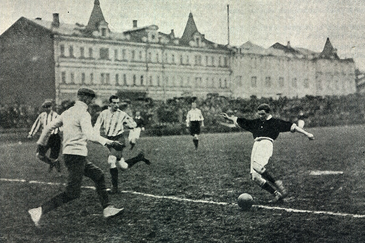

ფეხბურთის ისტორია დაიწყო ინგლისში, ოფიციალურად იყო შექმნილი 1863 წელს 26 ოქტომბერს, და პირველი თამაში იყო გამართული 2 კოლეჯის შორის
ფეხბურთი ითვლება ყველაზე პოპულალურ სპორტად დედამიწაზე, და ყველაზე მთავარი თამაშები იმართება მსოფლიო ჩემპიონატების დროს
ყველაზე პოპულალური მსოფლიო ჩემპიონატი იყო გამართული კატარში, ამ ჩემპიონატს ადევნებდა თვალს 5,1 მილიარდი ადამიანი
ხოლო არგენტინა-საფრანგეთის ფინალში თამაშს ერთდროულად უყურებდა 1,5 მილიარდი ადამიანი, ეხლა კი მსოფლიო ჩემპიონატი 4 წელიწადში ერთხელ იმართება
და ეხლაც ფეხბურთი რჩება გავრცელებულ სპორტად, მას თამაშობენ დედამიწის უამრავ ადგილას